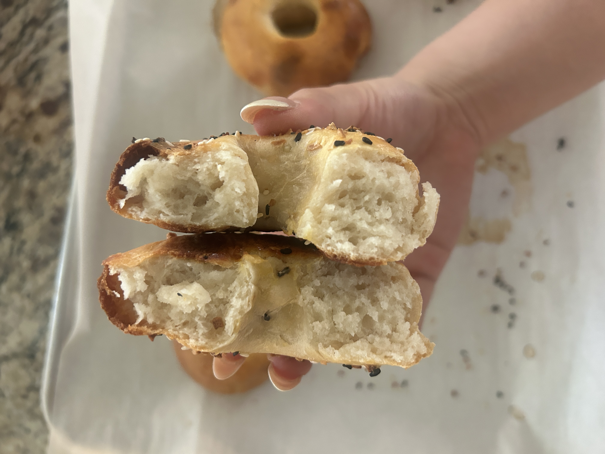
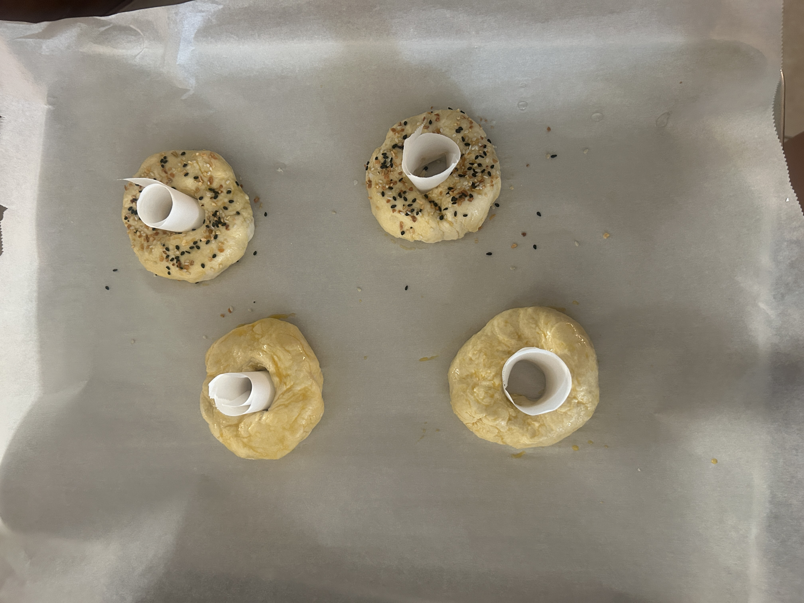
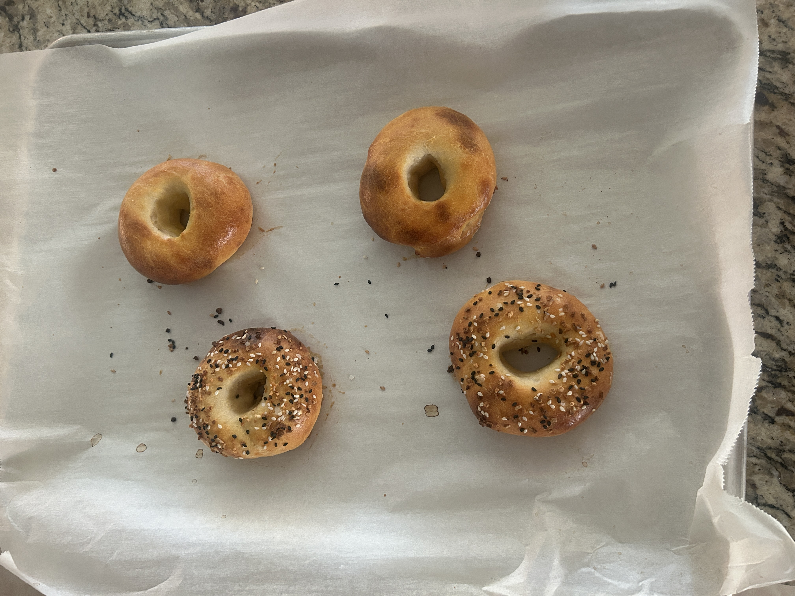

These protein bagels are seriously easy to make. With just three ingredients and a few minutes of prep, you can have a filling breakfast or snack ready to go. I love making them on busy mornings because they are quick, tasty, and keep me full until lunch. Soft, satisfying, and simple, they are perfect for anyone who wants something homemade without spending a lot of time in the kitchen. You can also create so many other breakfast foods with this recipe. For example salmon lox bagels with cream cheese, bacon egg and cheese on a bagel, etc. The creations are endless!
Ingredients Needed:
- 1 1/4 cup All Purpose Flour
- 1 cup non-fat Plain Greek Yogurt
- 2 1/2 tsp baking powder
- Everything But the Bagel Seasoning
- 1 tbsp salt
- 1 egg
Nutrition Facts:
- ~160 Calories
- ~4g of protein
Steps to Make:
- Preheat oven to 400 degress Fahrenheit
- Combine flour, salt, and baking powder into a bowl and mix well
- Add 1 cup of Greek Yogurt and mix
- Knead together until it forms a sticky dough
- Separate the dough into 4 pieces
- Form into bagel shapes
- Line baking sheet with parchment paper and separate bagels evenly
- Beat one egg and lightly coat bagels with wash and add everything bagel seasoning
- Place rolled up sheets of parchment paper in bagels so the hole does not close

- Bake for 20 minutes or until golden brown
